1. Start through the registered generator
You need a GX-TXT installation that offers the unchanged Curve Digitizer 2.0.9, the Image Dataset source, compatible curve Dataset Preview, and the registered calibrated_digitizer generator from org.giuxlab.gxtxt.numerical_examples. These instructions use the actual dev110 deposited source as their baseline; installed dev111 behavior still requires execution. A missing component is a recorded compatibility gap, not permission to replace it with a private script.
- Open this tutorial through the common Guides/documentation catalog. Where admitted, choose the host’s Open Generate Session… button. It selects the declared library/generator pair; it does not run it.
- If reading this ZIP in an ordinary browser, use GX-TXT’s normal New Session / Generate Session workflow and select the same exact library and generator.
- Choose a new unused name, for example
tutorial01_four_points, and your ordinary Session Location/Project. Turn Copy previous Experiment documentation off so the new generator’s teaching notes are retained. Review the ordinary dialog, then press its ordinary Generate Session control (the caption in the recorded staged110 dialog). - Record the actual Session path and generator/library versions. If the library is missing, disabled or unavailable, stop and report that state; the tutorial neither installs nor enables it.
Checkpoint: a fresh real Session opens through the normal generator. Keep a separate outcome record for your new Session/run, including its actual identities and observations. The bundled step-outcomes.json preserves curated packet003/004/005 examples with qualified partial observations and null overall acceptance; it is not an empty template or evidence that your new run passed. Preserve those examples when recording your own work.
2. Distinguish the image from its reference table
Find source Image Dataset digitizer.calibration.image, expected to decode to 100 × 100 pixels. The generator also supplies digitizer.calibration.points, an independent numerical reference. Inspect its schema and notes through ordinary Dataset information. It is an input/reference, never the Digitizer result you will publish.
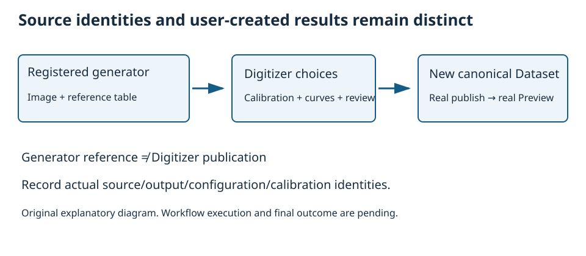
Open the source image using Curve Digitizer.
Use the ordinary Viewers route. The expected short tile is Digitalizer, provider Curve Digitalizer, module viewer.curve_digitizer / Viewer curve_digitizer. It is a Viewer service. Record the actual stage labels and open its source/configuration controls; this is not an Analysis Run action.
Select or create a configuration named Tutorial 01 — Four points. Record the source Dataset identity, source byte hash reported by CORE, actual decoded size and configuration identity. The image is authoritative; display zoom and canvas size do not redefine source-pixel coordinates.
Before calibrating, practice configuration identity safely: Duplicate this configuration, record the duplicate’s new ID, Rename the copy and observe that renaming preserves that ID, then Delete only the temporary copy after confirmation. Confirm the original remains and that deleting a configuration does not silently delete previously published Datasets. Create/switch configurations through the header selector; a calibrated configuration must not be rebound to a different image.
The unchanged Digitizer retains its original Help/F1 behavior. Use the common Guides entry for this external tutorial/manual; this draft does not claim that F1 opens it. Keep the vendor package intact.
3. Apply the four-corner calibration
In Calibration, define X as Time, unit s, role independent, linear, minimum 0, maximum 8. Define Y as Voltage, unit V, role measured, linear, minimum −2, maximum 2. Apply these axis settings. Use the manual four-point calibration. Interleave each button with its single source-image click: Set BL → click, Set BR → click, Set TL → click, Set TR → click. Each Set arms one click; it does not automatically arm the next corner. Use these centres:
| Order | Corner | px | py | Mapped coordinate |
|---|---|---|---|---|
| 1 | Bottom-left | 10 | 90 | (0, −2) |
| 2 | Bottom-right | 90 | 90 | (8, −2) |
| 3 | Top-left | 10 | 10 | (0, 2) |
| 4 | Top-right | 90 | 10 | (8, 2) |
The ideal mapping is x = (px − 10)/10 and y = (50 − py)/20. Actual corner clicks can differ. Zoom in for careful placement and record the stored source-pixel coordinates rather than claiming exact clicks from a visual screenshot.
Before adding points, use calibration verification at the blue cross centred at (30,70), with expected X = 2 s, Y = −1 V. Inspect reported residuals and conditioning. A verification marker diagnoses calibration and must not increase the curve point count. Clear the temporary verification marker and confirm the accepted calibration remains. Investigate a large residual, swapped corner or wrong Y direction before continuing. Verify using that same active realization, then select the intended calibration row and choose Accept. Record the actual accepted identity.
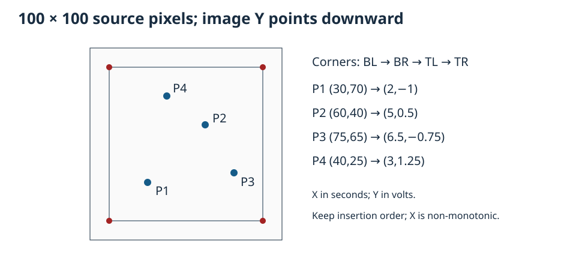
4. Preserve the intended point order
4A. Apply the ordering policy
Open Configuration → Viewer settings… → Digitizing. Choose None for Monotonicity and Insertion order for Point ordering source. Press the bottom Apply and inspect the saved status. These scientific settings belong to this configuration, not shared defaults.
Monotonic in X/Y automatically selects Sort by X/Y. Choosing incompatible ordering clears monotonicity. Stable ties retain prior relative order; publication sorts independently under each selected calibration. An X sort does not establish monotonic Y or a correct branch.
4B. Acquire the four points
In Curves, create one curve named Four reference points. Choose Add, enable point numbers and keep Snap to dark off initially. Enter these source positions in this exact order:
| Teaching label | px | py | X / s | Y / V |
|---|---|---|---|---|
| P1 | 30 | 70 | 2 | −1 |
| P2 | 60 | 40 | 5 | 0.5 |
| P3 | 75 | 65 | 6.5 | −0.75 |
| P4 | 40 | 25 | 3 | 1.25 |
The last X decreases, so sorting X would change the intended sequence. P1…P4 are teaching labels, not generator or actual Digitizer point IDs. Record the newly assigned immutable IDs, stored pixel positions and actual calibrated coordinates.
4C. Make reversible scientific edits
- Confirm four points. Undo once: expect three. Redo: expect four. Record the actual count at each action.
- Choose Move and move P2 visibly; inspect its changed scientific position, then Undo. Confirm its position and identity return.
- Choose Delete and click P2; confirm three points, then Undo. Check all four positions, IDs and sequence.
- Repeat a reversible edit using Ctrl+Z/Ctrl+Y and, where the intended point is selected, Delete. Check focus before acting.
- Show/Hide the curve; the points remain scientific data. Use mouse-wheel zoom, middle/right-button drag to pan and F to Fit. Source coordinates must retain their meaning.
Context actions apply near the intended point; right dragging empty canvas pans. Record history before switching configurations: transient/Undo state is not promised across a configuration or Session switch.
4D. Optional experiments — use a disposable configuration copy
Duplicate the saved configuration and record the copy’s new ID. Keep all experiments in this copy, then return to the original four-point configuration before publication.
- Apply Sort by X and observe the explicit sequence change; compare with insertion order.
- Enable Snap to dark with a recorded small Radius. Add a trial point near a mark/grid, compare original click versus stored snapped position, then Undo. Darkness is not curve recognition.
- Create, Edit and Delete a temporary empty curve, checking stable identity and deletion scope. Retain the measured curve.
4E. Orient yourself in menus and settings
Inspect the seven actual menus: Edit, View, Calibration, Dataset, Namespace, Configuration and Help. Record where the exercised commands appear. In Viewer settings, inspect these six pages:
- Display: point numbers and overlay presentation.
- Digitizing: snap/radius, monotonicity, ordering and trace density.
- Calibration: defaults for subsequent calibration actions.
- Axes & output: axis editor access and output naming.
- Dataset browser: namespace and catalog refresh.
- Configurations: current Session’s configurations and active identity.
On the disposable copy compare an unapplied display edit followed by Cancel with a deliberate Apply and saved status. OK applies and closes only after successful saving. Earlier successful Apply remains committed when later pending edits are cancelled.
User defaults and Session overrides follow normal host precedence; scientific ordering/points remain per configuration. A later configuration-save error can leave earlier shared preferences committed. Preserve the exact error and inspect both scopes; do not assume atomic rollback.
4F. Prepare Notes and stop before publication
Return to the original configuration. In Notes record source identity, independent reference, actual corner/point locations, insertion order and any deviations. After typing, leave the editor through an ordinary tab/control to trigger its focus-out persistence, then inspect the actual saved/error status. A count alone does not establish correct coordinates.
Stopping checkpoint: confirm the original configuration is active, exactly four intended points/IDs are present in insertion order, valid calibration is accepted and Notes are saved. Leave temporary copy experiments out of the published configuration. Resolve any discrepancy before Step 5.
After Step 5, inspect Dataset Notes through the normal Notes editor/Session Files viewer. Nonempty configuration notes append a titled section; identical repeated notes should not duplicate it, changed notes retain a new historical section, and empty notes leave existing content. A notes-save warning can occur after scientific publication; the Dataset may already exist.
5. Publish a genuine Digitizer output
In Publish, choose Separate layout and select exactly the one intended accepted calibration. Confirm this configuration contains the intended four-point curve: publication includes all stored curve points in the configuration. The current curve selection and Show/Hide state do not filter publication. There is no separate curve-selection control in Publish. For this first pass choose uncertainty mode none; this does not state zero uncertainty. Use a prospective base ID such as cd.tutorial01. Inspect the naming preview, existing-Dataset collision behavior, output form, units and selected calibration count. Record the actual IDs shown; do not assume the base ID is the final canonical identity.
Choose Publish selected calibrations and complete the normal review/commit. Record success or the exact refusal. A Notes warning can follow scientific commit: check whether the actual Dataset already exists before a justified retry. Verify a newly published Dataset appears with four actual points, the intended point ordering, source/configuration/calibration lineage and X/Y quantities/units. Compare each actual row against its ideal target while accounting for actual clicks. Record numerical deviations; do not silently round them into exact agreement.
If publication fails, retain the configuration and original reference Dataset. Check current source availability, valid selected calibration, the configuration’s complete curve/point set and output naming. Retry only after resolving the stated issue. Never substitute the generator’s reference table and call it a Digitizer publication.
6. Inspect and manipulate the published Dataset
Select the new canonical Dataset and open its compatible Dataset Preview. Use the real Preview offered by the installed host. If unavailable, record the exact state for CORE/MAIN; a static plot in this HTML is not an alternative Preview acceptance.
- Verify the Dataset ID, row count, X/Y quantities and units from Dataset information/schema. Select the correct curve and calibration group where the Preview exposes grouping.
- Use Show/Hide, Fit and a zoom/pan interaction. Inspect the non-monotonic sequence and return to Fit. Record which controls actually exist and their observed effects.
- Inspect Source/provenance and Quality where available. The unchanged provider’s current-byte verification is unsupported. A separate CORE host receipt, if present, is time-bound and must show expected/registered/observed identities, method and time. Cached status is not continuous verification.
- Confirm presentation changes do not rewrite the canonical Dataset. Record a refusal or unsupported operation as such; do not change the provider or add a private renderer.
Checkpoint: evidence must show the actual published result and a real Preview manipulation, not merely the generated reference table or a successful API read.
7. Save, reopen and test a recoverable error
- Save the Session through its ordinary workflow. Record canonical Dataset and configuration identities and any visible unsaved-state indicator.
- Close the actual Digitizer Viewer normally. Use the host’s supported Open Session action to reopen the saved Session where required, then open the Viewer anew through Viewers and select the original configuration. Confirm accepted calibration, four source positions/identities/order, Notes and publication links from that fresh readback. A surviving old canvas alone is not persistence evidence; an in-process Open Session action is distinct from a cold application restart.
- Open the published Dataset Preview again and repeat Fit and group selection. Record the actual reopened values and behavior.
- For a negative calibration exercise, create a separate draft/configuration copy. Put two calibration corners at the same source position. Observe the normal invalid/degenerate calibration refusal. Do not publish it. Cancel/discard that draft and reopen the preserved valid configuration.
If reopening produces a source-hash mismatch, unavailable image or missing state, preserve the Session and evidence and report the gap. Do not edit Session registries, source hashes or vendor files to force continuation.
8. Complete the evidence record
This independent package contains its instructions, original diagrams, reference equations and identities, provenance and per-step outcomes. It contains no executed Session or fake result image. The registered generator supplies the starting Session.
In your separate run record, for every step record actual application/component versions, Session/Dataset/configuration identities, action and observed outcome, screenshot/receipt paths, numerical values and unresolved differences. The outcome record now contains scoped observations and the preserved Preview failure. Mark a whole step passed only after its required real execution and review; a completed reading checkbox below is only a local reader aid. Preserve negative cases and TUTORIAL1’s separate scientific, visual and organizational review. Final tutorial acceptance additionally requires the real generator-button/Guides and save/reopen checks.
Reading checkmarks are local aids, never execution evidence.
Return to the first step · Package and compatibility notes
Package and compatibility notes
To read this independent ZIP, extract it into its own directory and open index.html with all its assets together. All reading assets are included; installed GX-TXT, compatible Preview/importer components and the declared registered generator are separate prerequisites. In GX-TXT, use common Guides supplied by the matching framework delivery. The Documentation Browser discovers staged content; it has no tutorial ZIP installer. Original vendor Help/F1 integration is not claimed.
The included plain file README.md retains package notes for an external text reader. This HTML section supplies the corresponding navigation inside the common host, whose supported web assets exclude Markdown. Missing components or unsupported operations remain explicit gaps; do not use a private generator or renderer. This is a source review draft0.1.0; final TUTORIAL1 quality and actual workflow acceptance remain pending.
Recorded execution — packet003, partial
This is an actual allocated operator example from GX210-TUTORIAL1, recorded on 2026-10-22 in staged GX-TXT 0.9.8.10-dev-110 with unchanged Digitizer 2.0.9. The normal registered generator was calibrated_digitizer 1.0.0. It does not replace your independent workflow or establish final scientific/visual quality.
The example’s configuration was idoc_0001, accepted calibration meas_73b415 (“Measurement 1”). These are this Session’s observed identities, not values to assume for a new Session. The short accepted-list display fingerprint is not the calibration ID or a full hash. Read the curated operator record and its scope and provenance.
Read the evidence in its recorded scope
The included plain file evidence/README.md retains the operator provenance notes for an external text reader. Inside this host, use this section and the separate packet003, packet004 and packet005 sections below. Each identifies the recorded candidate, actual action/state and remaining limits. The JSON records and unchanged full-size PNGs preserve exact strings and byte identities. An original filename containing “ready”, a current Quality tab, a static transcription check or equal images alone does not establish a current scientific Plot, action history or complete acceptance.
Your own Session/run record is separate from these curated examples. Preserve first failures and later limited successes; null acceptance and unperformed steps stay explicit. Reader checkmarks only track reading and never alter the evidence files.
Actual acquisition readouts versus independent targets
| Teaching label | Displayed source (px, py) | GUI X / s | GUI Y / V | Ideal target (X, Y) |
|---|---|---|---|---|
| P1 | (30.581, 70.452) | 2.003231018 | -1.003236246 | (2, -1) |
| P2 | (60.516, 40.516) | 5.001615509 | 0.498381877 | (5, 0.5) |
| P3 | (75.484, 65.419) | 6.500807754 | -0.7508090615 | (6.5, -0.75) |
| P4 | (40.516, 25.548) | 2.998384491 | 1.249190939 | (3, 1.25) |
Source-pixel readouts are rounded to three decimals. Actual corner/click positions differ from the ideal teaching geometry; do not reconstruct full-precision results from those rounded values. Verification reported ΔX = 0.003231017771 s and ΔY = −0.003236245955 V. No acceptance tolerance or measurement uncertainty was supplied or inferred.
What was observed and what remains
Normal publication reported one table.generic Dataset, cd.tutorial01.measurement_1.curves, with four rows, X in s and Y in V. Its GUI-reported canonical SHA was b28616fc9c7feba75a4707ec3042acfe6dcebb5af97913c356f7acb493b9470f; the existing post-run byte-hash receipt matched it. Column presence and four-row metadata do not complete the numerical row/immutable-ID audit.
The recorded Ctrl+Z/Y, Move/Undo and Delete/Undo restored visible counts, positions and order. Notes, source/configuration, accepted axes/map and output metadata were retained through ordinary Save/Open and an actual new Viewer readback. Full immutable-ID restoration, optional complete control exercises and cold application restart were not established.
Preview remains unresolved in packet003. The first open reported Preview unavailable: key "filters" not known in dictionary Select Render to retry. The operator stopped that path without Render retry, filter changes or a fallback. Fit/zoom/pan/group/Show-Hide/Source/Quality were not tested. MAIN reported a later CORE source fix; this record contains no accepted fresh remaining-path 004 result. Native Guides HTML action was omitted because that unchanged stage lacked the authored content.
The original operator receipt and first failure are preserved. Final tutorial acceptance remains open, and this packet gives no actual-workflow credit to Tutorials 2/3 or GUI performance/parity. The following ten images are unchanged real captures, not authored diagrams or synthetic outputs.
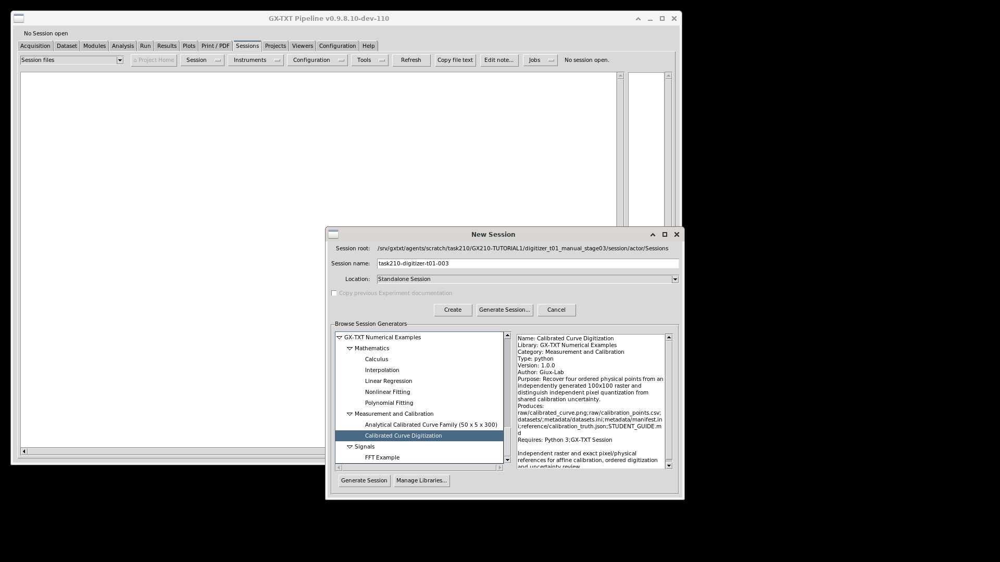
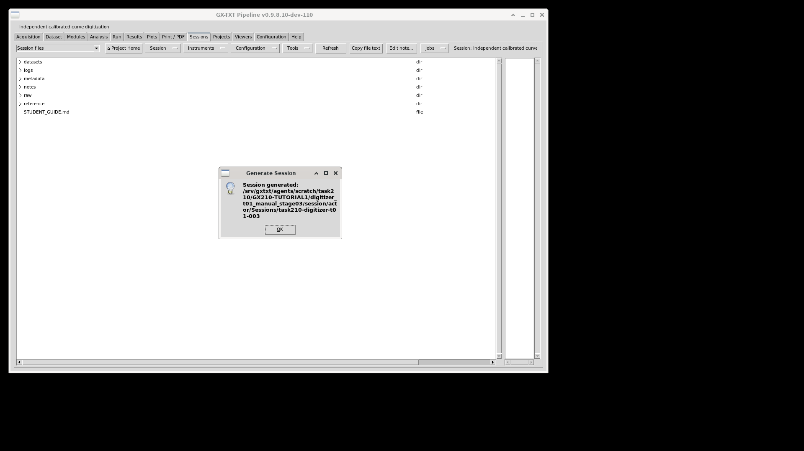

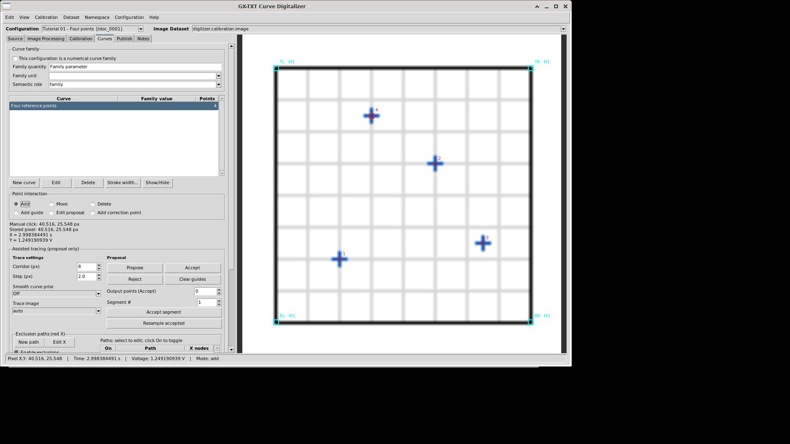
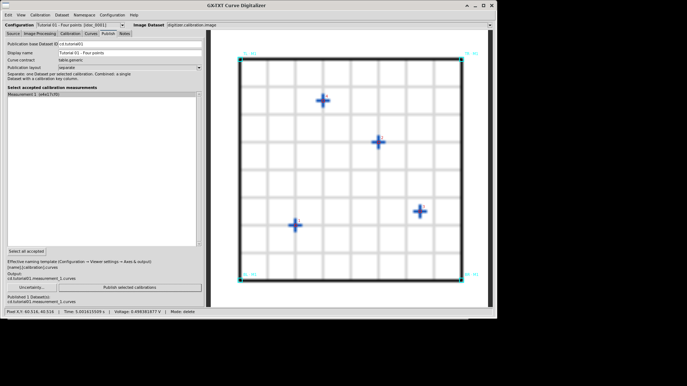
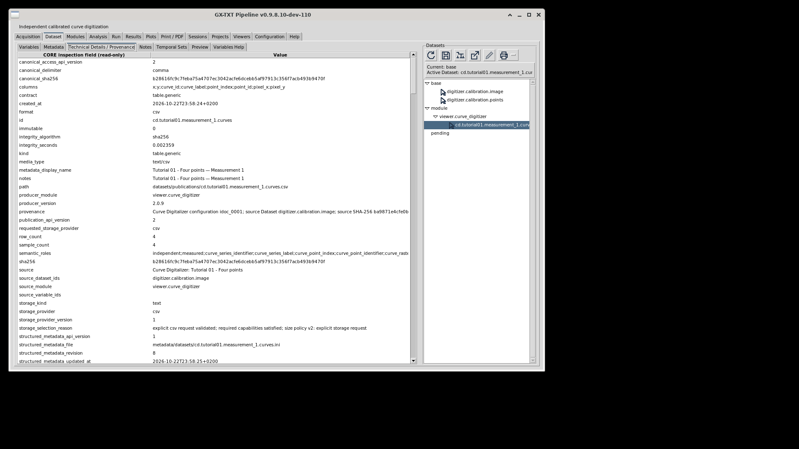

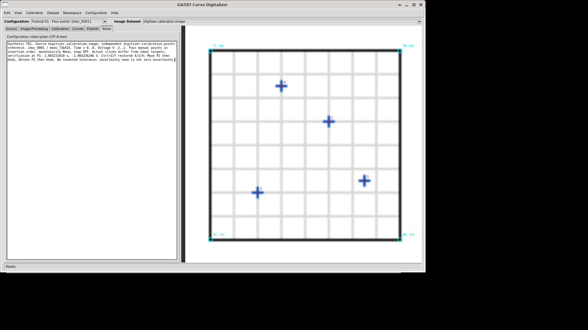
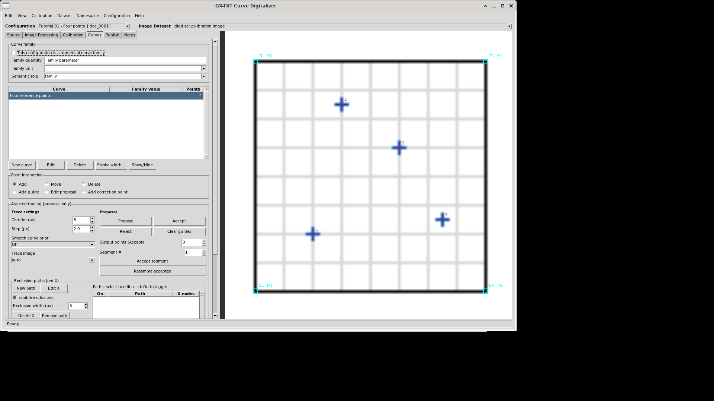

Later readback — packet004, partial
TUTORIAL1 continued through ordinary mouse and keyboard actions on a preserved whole copy of the original Session, using frozen MAIN candidate 06ebcb958357322d5d6ccde15800e803f485de0a, displaying GX-TXT 0.9.8.10-dev-111. This candidate was not installed or activated. There was no new generation, Job, publication or Dataset. The original packet003 Session, records and captures remain preserved.
Read the later operator scope and exact displayed values and schema. These observations complete the current table display readback; they do not independently validate calibration mathematics, physical accuracy or a numerical tolerance.
All four current rows and IDs
Ordinary Current → Table pages and column resizing exposed all eight columns. The common curve_id is 625c8a1d-5315-4cb8-80cd-11858e8a2cf5; curve_label is “Four reference points” in each row. Together with these common fields, the six columns below reproduce the displayed eight-column table.
| x / s | y / V | point_index | point_id | pixel_x / px | pixel_y / px |
|---|---|---|---|---|---|
2.0032310177705983 | -1.0032362459546924 | 0 | ceb88584-5b21-4f57-b038-aee330b7e8f1 | 30.580645161290324 | 70.451612903225808 |
5.0016155088852985 | 0.49838187702265424 | 1 | f399858b-d0b9-4d01-bab8-ca8945e4916e | 60.516129032258064 | 40.516129032258064 |
6.5008077544426497 | -0.75080906148867288 | 2 | c7d27a68-4334-4281-b7c4-33a228cab0e6 | 75.483870967741936 | 65.41935483870968 |
2.9983844911147011 | 1.2491909385113273 | 3 | a4ac88e7-946b-43d1-917b-f14bb9581176 | 40.516129032258064 | 25.548387096774192 |
The stable Variable IDs are x, y, curve_id, curve_label, point_index, point_id, pixel_x and pixel_y. Unit-qualified transcription headings such as x_s are not new Variable IDs. X/Y and raster coordinates are float64; point_index is int64; IDs and label are text. Displayed undeclared units on IDs, label and index are not an inferred unit “1”. Source row numbers 1–4, point_index 0–3 and immutable UUIDs have distinct meanings.
An independent static review corroborated the displayed decimal strings, UUIDs and schema in captures015–017. The later normal Save/Open and new Viewer/table consultation also showed matching current values and UUIDs. There is no pre-Undo UUID baseline: these observations cannot establish that the earlier Undo operations preserved every original ID. This was an in-process reopen, not a cold application restart.
Preview observations must be read in order
The earlier missing filters key did not recur in this bounded attachment. Capture022 showed connected native geometry with a Previous render warning. After one permitted normal Render,025 showed current cache/source status on the Quality tab and026 showed the verified source image with retained overlay. Neither is a current visible native-line capture. Provider source-integrity and Quality fields are not an independent continuous byte audit or physical accuracy assessment; physical accuracy remained not_assessed and uncertainty not_declared. A separate CORE receipt is time-qualified.
Hiding the curve removed the overlay in027; original blue raster crosses remained input pixels. The native Plot in028 was empty by visibility with current cache status. Restored native geometry in030 and the checked source overlay in031 again carried Previous render. The Zoom input had been batched before inspection of the intermediate warning. Changed ticks and clipping do not establish exact bounds, a zoom factor or current-source navigation acceptance. No current visible native-line capture exists in this packet. Connecting segments show recorded point order, not a fitted law, temporal sampling or new measurements between points.
The operator stopped further affected Render, visibility, Fit and zoom work after031 and retained finding047. A warning alone does not establish payload mutation or the cause of invalidation. MAIN reported a later source correction; its runtime verification is outside this packet. Full Preview, Fit/pan, performance, original/candidate parity, native Guides and final tutorial quality remain open. The original packet003 host omission does not establish absence in the later untested host.
Unchanged original captures

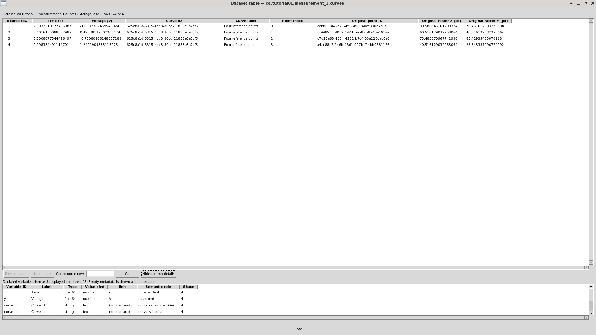
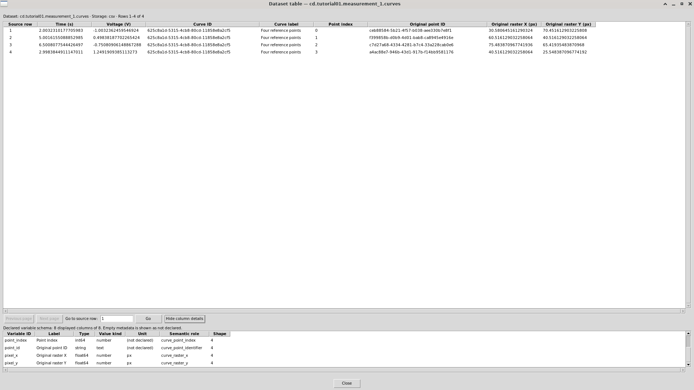

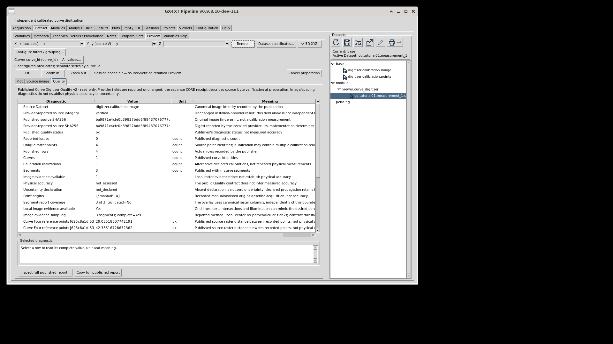

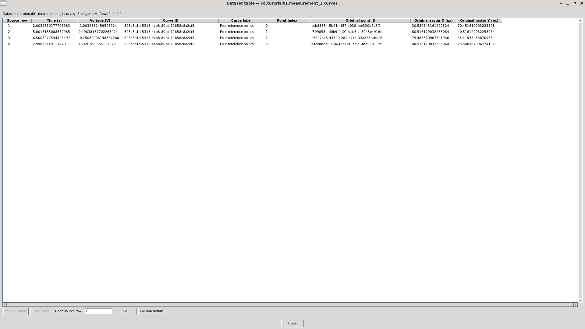
Bounded Preview continuation — packet005, partial
This later allocated TUTORIAL1 run used another preserved whole Session copy and frozen MAIN dev111 candidate d3e578c1e7b672a76e336f590a160180b1bb109d, not an installed release. The same four-row publication and canonical identity were retained. There was no new generation, producer Run, Job or publication, and no repetition of the full point/UUID transcription. Read the scoped record and unchanged capture hashes.
The initial automatic Preview still showed Previous render. That unresolved state is preserved in014/015. One normal explicit Render then produced current native connected geometry, Quality and Source views. Hide, Show, Fit and Zoom were each followed by a bounded 1200ms idle and inspection before the next action. This sequencing distinguishes these observations from the earlier batched restoration/navigation in004; it is not a latency measurement.
- Hide:019 removes the retained source overlay; original raster crosses remain.022 shows native geometry hidden with axes and current status retained.
- Show:023 restores the checked source overlay;025 shows current visible native geometry before navigation. No new scientific points are created.
- Fit:026 shows the complete current curve. Ticks stayed unchanged because the view was already fitted; no additional numerical range is inferred.
- Zoom in:028 shows changed viewport ticks/clipping with current status. The labelled X ticks are 2.5–6 versus 2–6.5 before; Y labels are −0.5–1 versus −1–1. These visible labels are not exact viewport limits, data extrema or a measured zoom factor.
Quality showed a separate CORE source-byte verification observation at preparation time 2026-10-22T23:11:03Z. Provider diagnostics remain read-only; this receipt and cache state are time-qualified, not continuous byte verification or physical accuracy. Do not infer hidden/clipped digest text. Segments join recorded point order, not a fitted law or values measured between points.
These current frames add scoped evidence for the explicit-Render path. They do not resolve initial automatic attachment, prove panning or cold/hidden-state persistence, establish all controls, original/candidate parity, sustained redraw or comparative performance, or complete the tutorial. Whole functional groups, independent numerical acceptance, native Guides and final TUTORIAL1 quality remain open. Earlier003/004 failures, original Sessions and ZIP histories are preserved.
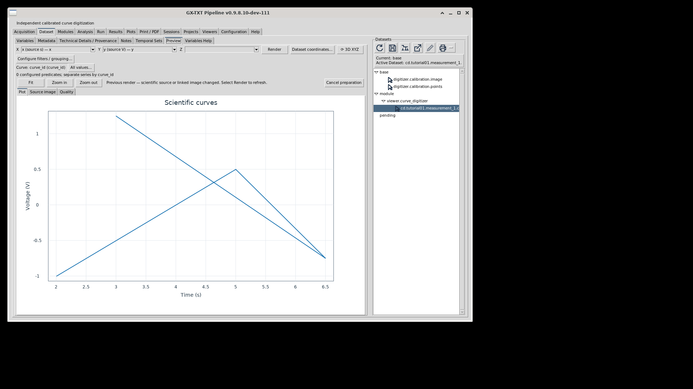
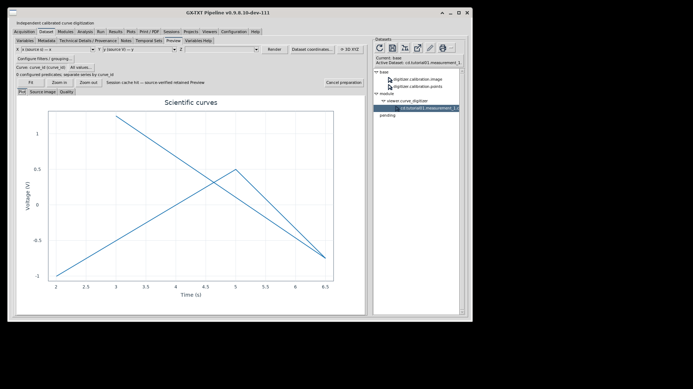

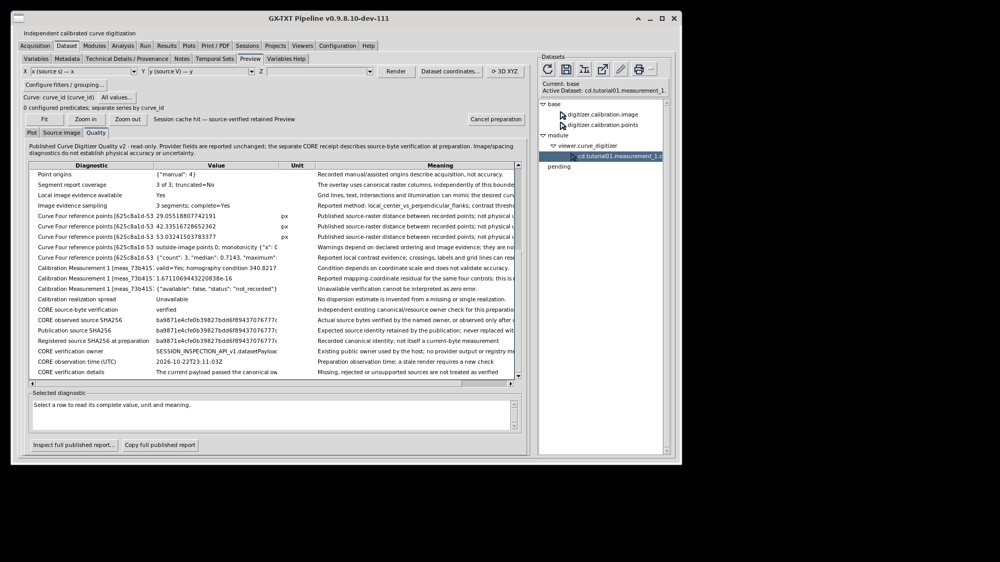
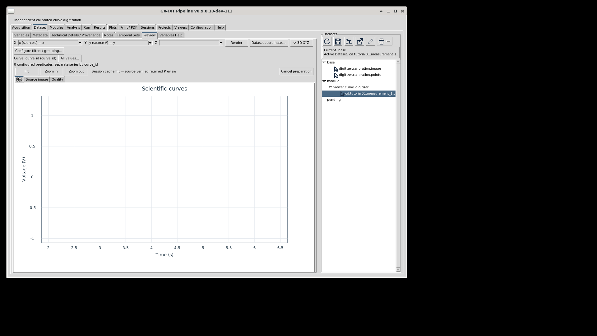
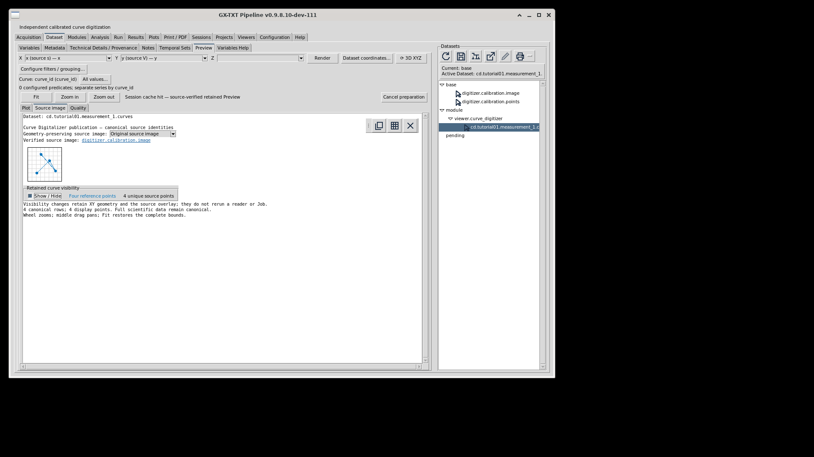

Supplement007 — saved Hidden in a relocated Session
This later allocated TUTORIAL1 observation was accepted by MAIN within a specific scope. A fresh application root opened a relocated, normally saved copy of the closed006 Session on frozen integration08, candidate 98ab504e03d991100630d38de9172eb362f978c9, displaying dev111 with unchanged Digitizer2.0.9. It was not an installed release. The same publication cd.tutorial01.measurement_1.curves was selected; there was no new generation, producer Run, publication or history replay. Read the supplementary record and exact source/capture pins. The existing per-step outcome file retains its earlier003/004/005 scope.
Keep saved visibility, preparation and drawn geometry distinct
The initial Source checkbox was unchecked: the original raster crosses remained, while the removable connected overlay and filled markers were absent. Four unique source points, four canonical rows and four display labels remained. Those labels describe retained data; they do not mean that four native points were drawn while Hidden. The full operator record and MAIN’s frame011 review describe the007 hidden native Plot as empty with axes. This differs from the separately qualified006 grey pane. Keep each presentation attached to its own run; do not substitute one image for another.
The settled status read Prepared retained Preview — source-verified. MAIN accepted its current/source-verified semantics and the operator’s chronology of automatic preparation with zero explicit Render and zero Hide actions. An unpressed button, the Cancel preparation control or a dataset-tree pending label alone cannot establish that chronology or prove preparation remained pending. No transient Previous/Preparing state was captured or forced; do not invent a transient or infer that none ever occurred.
A new CORE context precedes Show
The full accepted operator observations expose the separate CORE owner SESSION_INSPECTION_API_v1.datasetPayload, observed source SHA256 ba9871e4cfe0b39827bdd6f89437076777d2f25e1c389d005d78a531689c5039 and preparation time 2026-10-23T01:36:31Z. This new context existed before Show. The same timestamp remained after Show, Fit and Zoom; it is not a new byte check for every toggle or continuous monitoring. These details come from the full accepted record and its diagnostic frames, rather than the four copied images alone. Provider Quality remains read-only and separate; physical accuracy was not_assessed and uncertainty not_declared.
Observe each ordinary action before the next
- Show before navigation: one Show at01:38:01UTC, followed by bounded1.2s idle and inspection, restored the source overlay. Capture019 shows native connected geometry before Fit or Zoom. A segment crossing is not a fifth acquired point.
- Fit before Zoom: one Fit at01:38:45UTC, followed by separate idle and inspection, retained an already-fitted full view. The full operator/MAIN frame020 review supplies this observation; a mandatory visible tick change would be an invented condition.
- Zoom: one Zoom in at01:39:02UTC, again separated by idle and inspection, changed the viewport and clipped portions at its borders. Clipping does not delete scientific rows. Tick labels are not exact viewport limits, source extrema or a measured zoom factor.
- Save and close: the normal Save confirmation identifies the007 working copy and its manifest. The wider operator receipts record normal root close at01:41:06.651015UTC and exit0. A Save image alone does not prove root closure, and recorded cleanup does not establish universal descendant drain.
The existing selected62-file guard set retained61 byte/mode identities; the normal Save changed only the checked working manifest, whose mode remained0600. Nine selected original003/closed006/new007 raw/canonical image/CSV byte guards remained unchanged. These are existing preservation receipts, not a new whole-Session or mathematical validation by GUIDE.
Four unchanged MAIN-approved captures
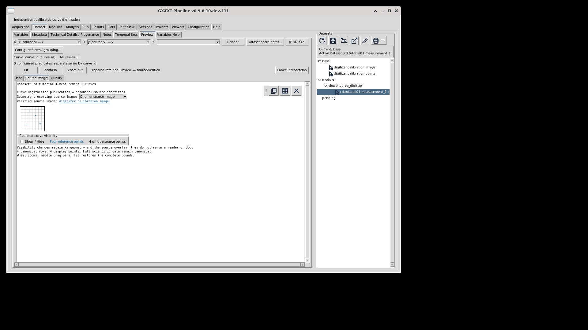
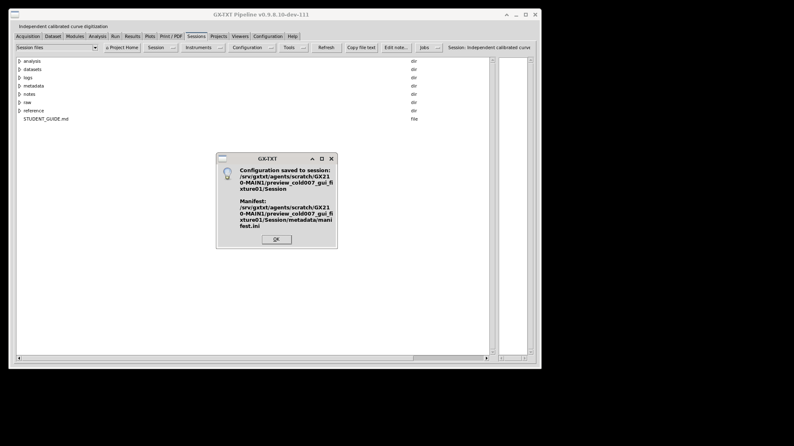
This relocated-copy sequence demonstrates saved Hidden metadata plus new automatic preparation at that target. Relocation changes local cache identity: it does not prove same-path cold-cache reuse, freshness of006’s older preparation or continuous source verification. The bounded idle/capture intervals include operator/tool overhead and do not measure first-frame latency, redraw rate or comparative performance. Full T01, native HTML/actions, the broader Plots/control matrix, mathematical accuracy, parity and final tutorial quality remain open. Original003/004/005/006 failures and qualified observations remain preserved. Completed scientific tutorial ZIP count remains0.